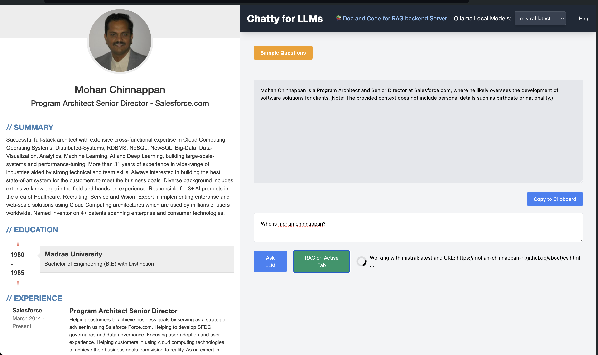

About Chatty for LLMs
Welcome to our Chatty for LLMs! This tool is designed to help to chat with your LLMs running locally using Ollama
Features
- 🛠️You can select a LLM running on your local machine via Ollama
- 📈 You can run RAG ( Retrieval-Augmented Generation) on HTML page in your active tab. This will use your selected LLM for RAG
How to Use
To get started with our extension, follow these simple steps:
- 🔹 Step 1: Select your local LLM running using Ollama. You need run the following commands on local machine:
export OLLAMA_ORIGINS=chrome-extension://* ollama serve - 🔹Step:2 You can check the models running on your local machine by running
ollama ls --------------------------------------------------------- NAME ID SIZE MODIFIED nomic-embed-text:latest 0a109f422b47 274 MB 4 months ago phi3:latest a2c89ceaed85 2.3 GB 4 months ago llama2:latest 78e26419b446 3.8 GB 4 months ago llama3:latest a6990ed6be41 4.7 GB 4 months ago mistral:latest 61e88e884507 4.1 GB 6 months ago tinyllama:latest 2644915ede35 637 MB 6 months ago - 🔹 Step 3: Now you are all set to Ask LLM


- 🔹 Step 4: To Run RAG you need to run a local server: Details are here
- 🔹 Step 5: Once RAG local server is running, you ask questions about html page in the active tab 